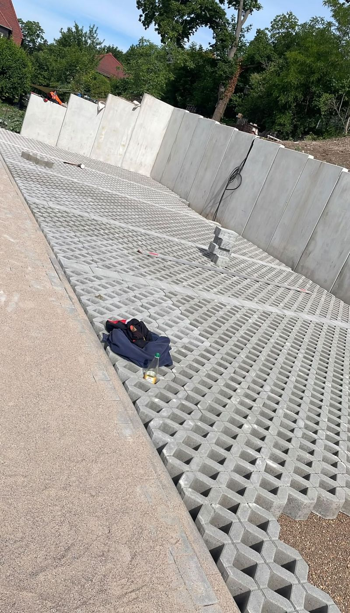
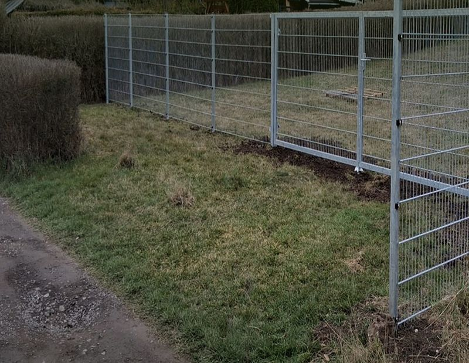
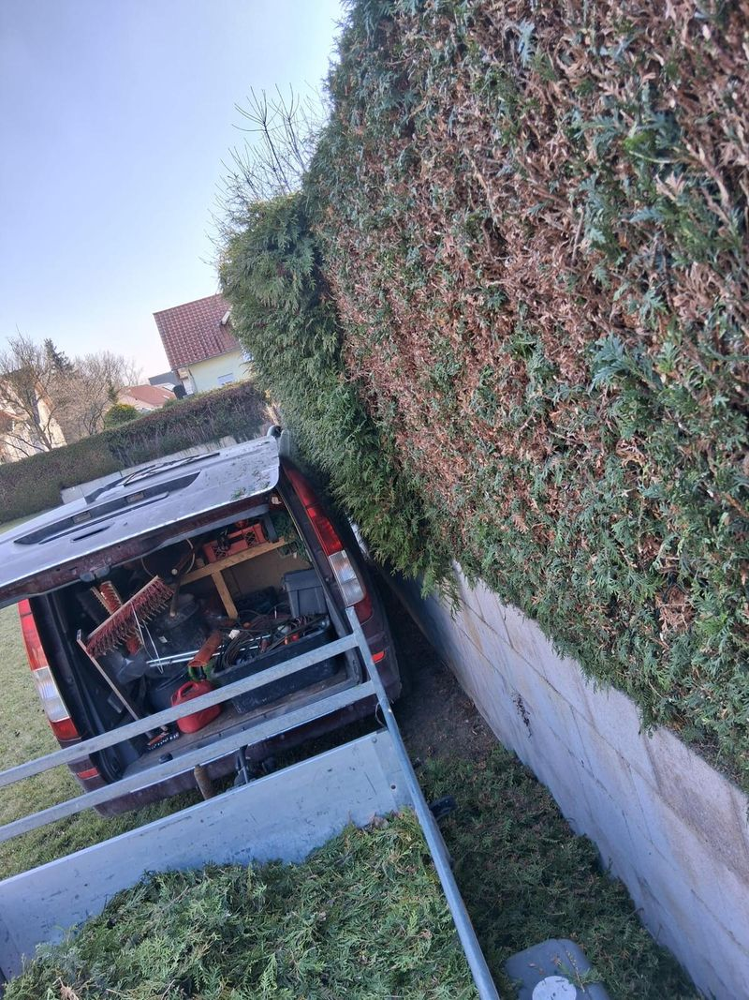
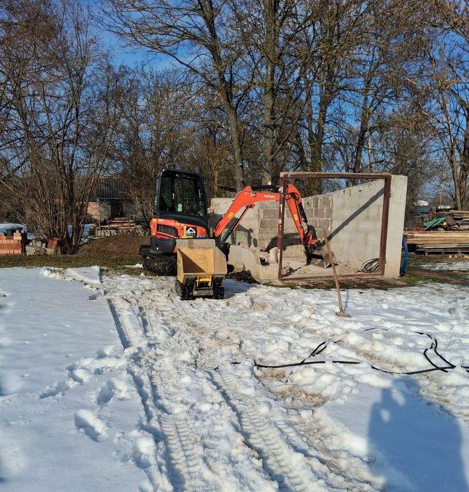
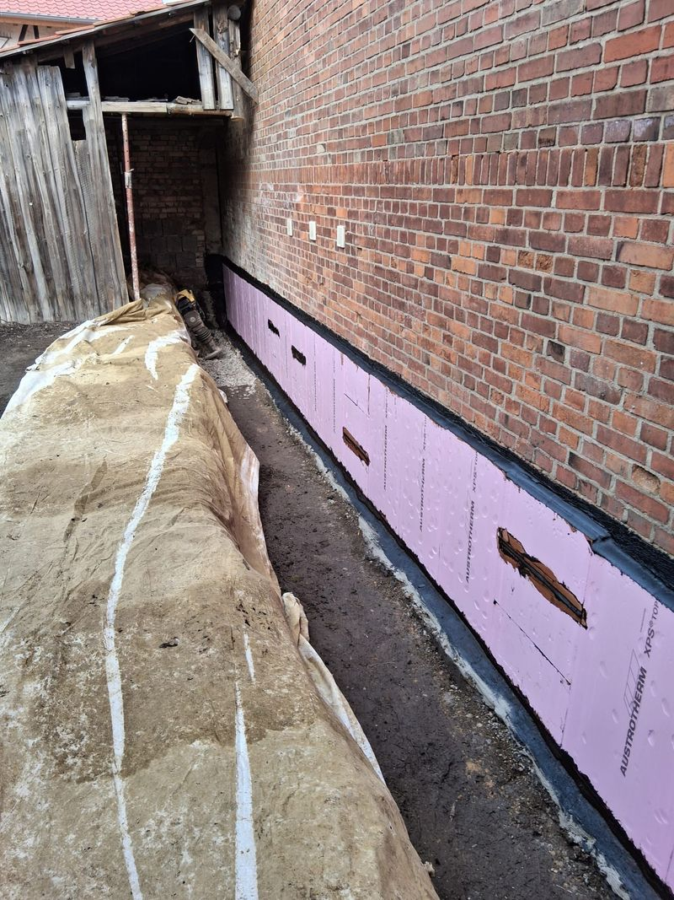

Leistungen
Leistungen für Haus, Grundstück und Kommune.
Sechs Fachbereiche, ein Anspruch: saubere Arbeit vom ersten Aushub bis zur letzten Fuge. Alle 22 Einzelleistungen finden Sie hier im Detail.

01 · Pflaster- & Wegebau
Flächen, die tragen – und gut aussehen.
Ob Hofeinfahrt, Gartenweg, Terrasse oder kompletter Firmenparkplatz: Wir bauen den Unterbau fachgerecht auf, verlegen präzise und achten auf sauberes Gefälle, damit Regenwasser dorthin läuft, wo es hingehört.
- Pflasterarbeiten
- Wegebau
- Parkplatzbau
- Terrassenbau

02 · Außenanlagen & Zaunbau
Vom Neubau-Grundstück zur fertigen Außenanlage.
Wir übernehmen die komplette Gestaltung Ihrer Außenflächen – Einfriedung inklusive. Vom stabilen Doppelstabmattenzaun mit sauber gesetzten Fundamenten bis zum fertig verlegten Rollrasen, der sofort grün wirkt.
- Außenanlagen
- Zaunbau
- Rasenanlage
- Rollrasen

03 · Grünpflege
Gepflegtes Grün, das ganze Jahr.
Einmalige Aktion oder regelmäßiger Pflegetermin: Wir halten Gärten, Hecken und Bäume in Form – fachgerecht geschnitten, zum richtigen Zeitpunkt und mit ordentlicher Entsorgung des Schnittguts.
- Gartenpflege
- Heckenschnitt
- Baumpflege

04 · Erd- & Baggerarbeiten
Präziser Aushub mit moderner Technik.
Baugruben, Fundamente, Geländemodellierung: Mit unserem Maschinenpark arbeiten wir effizient und millimetergenau – auch dort, wo große Technik nicht hinkommt. Betonarbeiten führen wir gleich mit aus.
- Erdarbeiten
- Baggerarbeiten
- Betonarbeiten

05 · Abbruch & Rückbau
Platz schaffen – kontrolliert und sauber.
Ob Schuppen, Garage oder Entkernung vor der Sanierung: Wir reißen kontrolliert ab, trennen die Materialien sortenrein und kümmern uns um die fachgerechte Entsorgung. Zurück bleibt eine aufgeräumte Fläche.
- Abriss
- Rückbau
- Entkernung

06 · Entwässerung & Sanierung
Trockene Keller, sichere Ableitung.
Feuchte Wände und stehendes Wasser müssen nicht sein. Wir legen Drainagen, erneuern Kanäle und dichten Mauerwerk fachgerecht ab – damit Ihr Gebäude dauerhaft trocken bleibt.
- Drainage
- Entwässerung
- Kanalbau
- Trockenlegung
- Mauerwerksdämmung
Kostenlos & unverbindlich
Ihre Leistung war nicht dabei? Fragen Sie einfach.
Wir beraten Sie ehrlich, ob und wie wir Ihr Vorhaben umsetzen können – telefonisch Mo–Fr von 07:00 bis 17:00 Uhr.